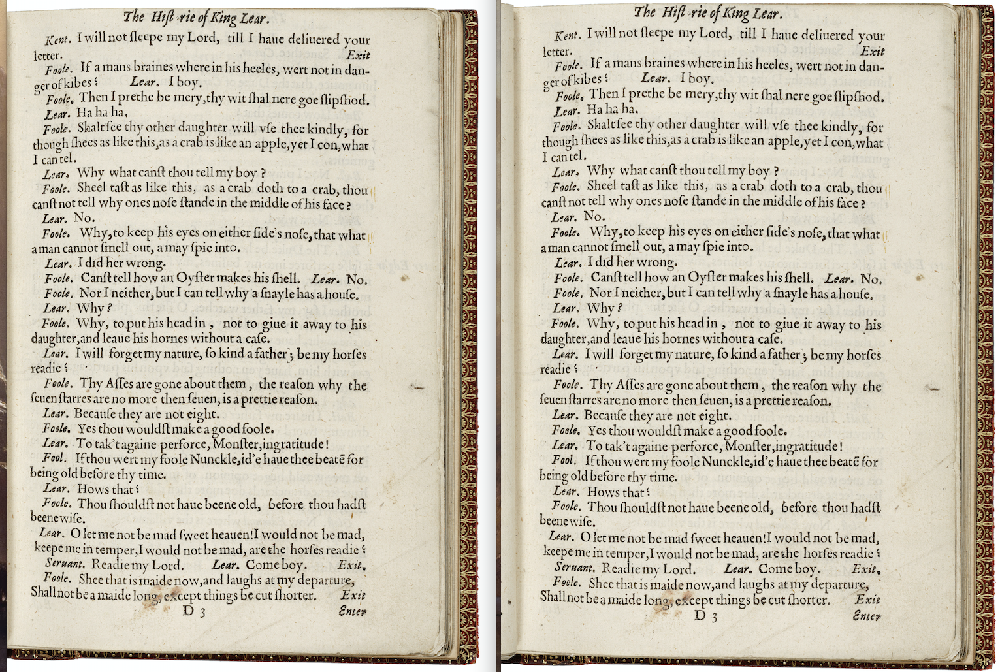

{
"published": true
}We've all been there: you've just digitzed a handful of gorgeous books, or equally likely, find yourself in possession of a thousand images, but the digitization resulted in opposing pages as a single image file. You'd like to ingest these books into your stunning repository and front-end with each page as a seperate image file. Split each page 50/50 vertically? Piece of cake?
Think again. A sneaky side effect of many book scanners, when creating images of opposing pages, is a drifting gutter for the book where you'd like to split the page. This is a result of the aggregate page height on either side of the book shifting as pages are flipped. A 50/50 vertical split across all pages ends with early pages cropping too much from the right-hand page, nice crops around the middle, and left-hand pages overly cropped near the end.
To split a set of pages where the book gutter is drifting from left to right, one needs to move the centerline for the crop from left to right across the pages when splitting. To this end, whisked together a small, simple python script to crop a set of images, moving the centerline point accordingly. It accepts just a couple of inputs: percentage from left-right to begin, and percentage from left-right to end on. I've shared this script as a gist here.
For example, in a recent book, after some trial and error, it worked to begin cropping at 51%, and end at cropping 52%. Said another way, the centerline was at 51% from the left-hand side in the beginning, and drifted to 52% by the end of the book. The script simply counts the number of pages inputted, takes the percentage change, and applies an incrementing crop across each page. Voila!

The result, the properly cropped page on the left, the improperly cropped page on the right. In this example, no text is cutoff from the improper crop, but one can imagine this problem could errantly crop text in pages if not accounted for, and does get worse over the course of large books.
All kinds of improvements could be made, but it works in a pinch.